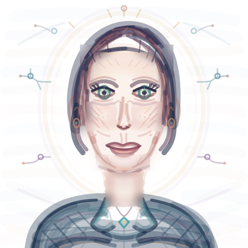

I gave frontier LLMs a canvas and told them to draw a self-portrait.
August 4, 2026
Here are the self-portraits for Fable 5, GPT 5.6 Sol, Kimi K3, and Qwen 3.8 Max - out of order. Can you guess which one is which?
Interesting, right!? The Fable 5 one felt very claudey to me. Also notable is the uncanny resemblance of the 5.6 Sol drawing to Leopold Ashenbrenner at such an eventful time for him.
In this blog post, I'll lay out the motivation, results, and machinery of this benchmark. I ran it on the following models:
| Model | Release date |
|---|---|
| GPT 5 | August 2025 |
| GPT 5.4 | March 2026 |
| GPT 5.6 Luna | July 2026 |
| GPT 5.6 Terra | July 2026 |
| GPT 5.6 Sol | July 2026 |
| Haiku 4.5 | October 2025 |
| Opus 5 | July 2026 |
| Fable 5 | June 2026 |
| Kimi K3 | July 2026 |
| Qwen 3.8 Max | August 2026 |
All models were set to use max effort possible1. I called OpenAI and Anthropic models through their respective APIs, Qwen 3.8 Max to Alibaba through OpenRouter, and Kimi K3 to Moonshot through Openrouter as well2.
Background + motivation
After reading this blog post from tryai about benchmarking frontier LLMs on recreating the Mona Lisa and Starry Night, I became very curious about LLM's using art tools. It seems obvious that giving an LLM the ability to wield art tools like a human is a more apt benchmark of creative ability than having a model blindly generate an SVG of a pelican riding a bike. Furthermore, this is more likely an OOD task.
The purpose of this benchmark is twofold:
- to extend the frontier LLM drawing benchmark to a fully open-ended creative task
- to genuinely see how models choose to depict themselves3
To that end, my benchmark is a purely subjective measure of the "artness" and "portraitness" of the drawings - the more it looks like a drawing by a real artist, the higher it'll rank.
Here are the drawing processes for each model, displayed as a video playing through each 512x512 canvas. Below are the link to the full transcript of each drawing, their own descriptions of the drawing, my rating out of 10, and the total cost.
I was most impressed by Fable. It was the only model to deliberately depict itself more abstractly because it "feels honest to what I actually am". You can see its internal dialogue here. Its drawing prowess also surprised me. It consistently and accurately applies many blurs in a single tool call, something that other models struggle with.
I was also impressed by 5.6 Terra becuase its drawing feels the most stylistic - you can imagine an artist actually depicting themselves this way.
Another thing I wanna note is Opus 5's process. Besides drawing an uncanny, slightly terrifying portrait, it was the model that took the most turns4. It erased and redid parts of its drawings the most. I speculate that the reason Fable didn't do this is beacuse it was able to correctly draw what it wanted to draw the first time, eliminating any need for re-doing.
Qwen 3.8 Max was ok, and I was disappointed by Kimi K3. All older models - GPT 5, GPT 5.4, Haiku 4,5 - did quite poorly, which shows how much visual understanding, reasoning, and tool calling have improved even in the last 6 months.
I think overall this was a fun exercise. It's clear that the models are improving in capability, yet are still are a far cry from real art. One thing to note is that the harness is fairly rudimentary - I think that putting significant effort into creating a better harness could result in much better outputs.
Agent Harness
I started with the environment provided by tryai's painting reconstruction benchmark. However, the outputs don't look like drawings at all. After several iterations, I ended up with a harness I'm happy with (GitHub: github.com/iroblesrazzaq/canvas-arena). Here's the before and after of the harness using GPT 5.6 Luna:

The model has the following tools:
| Tool | Function |
|---|---|
view_canvas |
look at the current drawing |
set_color / set_brush / set_pressure |
pencil colour, tip width, how hard you press |
draw |
a batch of marks: strokes, lines, outlines, dots |
smudge |
blend regions |
erase |
lift regions back to white |
clear_canvas |
wipe the page |
finish |
submit and end the run |
The goal is to give the agent enough tools to be able to sufficiently create a drawing and make the canvas look realistic. For the realistic canvas, I set pigment to only darken, added imperfections that simulate how pencils actually draw, and added a field that simulates how pencils mark plant fiber as a function of how "high" the pixel is and how much pressure is applied. That is, a high fiber catches more pigment --> is darker.
I gave each model 200 turns to finish their drawing. A turn is defined as one response from the model - that can be drawing, looking, or just thinking. Also, the model can write multiple draws or smudges in the same tool call.
Every model finished in under 200 turns except for GPT 5, which failed to understand theh task well. In fact, every model used less than 100 turns except Opus 5, with 191 turns.
My prompt was designed to:
- explain the medium
- state the constraints - 200 turns, call finish when done
- never tell the model what to draw
More musings
One neat exercise is to observe OpenAI's SOTA improve through time. OpenAI released GPT 5 in August 2025, GPT 5.4 in March 2026, and GPT 5.6 in July 2026. Below are the final versions of all three, in which we can see marked progress throughout. I ran this analysis with OpenAI models because I have access to free API credits with them.
Another interesting axis is cost. Here is the cost breakdown for each of the runs:
And the pareto chart measured with my very subjective rating:
Art and AI
I would be remiss if I didn't discuss the role of AI in art. Despite this benchmark, I firmly believe that
AI has no place in the creative world. In art, artists create a dialogue with
the viewer, the art community, and even themselves through their art - a critical component that
AI cannot and should not replace.
Moreover, I think it's important to recognize art as self-sufficient - that is, creating art is one of the principal purposes of creating art. AI is different. Its end is to increase productivity or improve humanity (or increase shareholder value). Thus, AI has no place in the very human world of art.
For those of you in the bay area looking to escape the AI bubble for once, I highly recommend you visit the Matisse exhibit at SF MoMA! I enjoyed it a lot, and it's up through September 13.